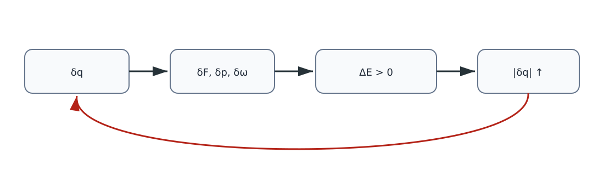
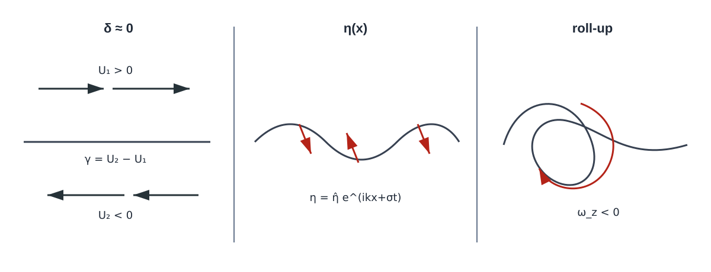
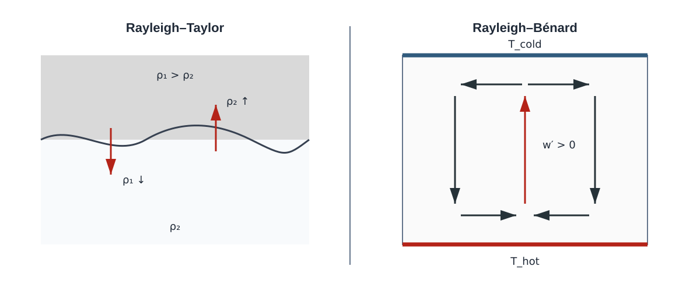
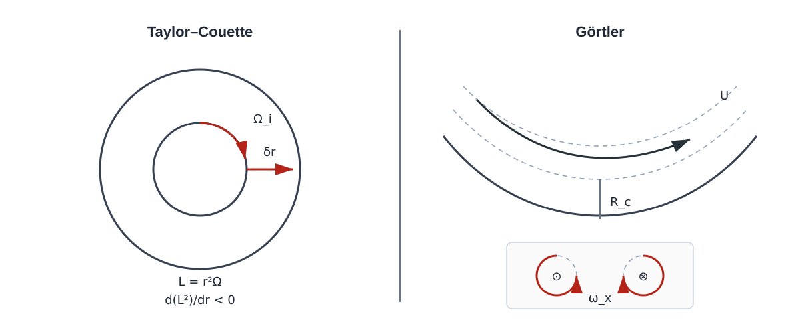
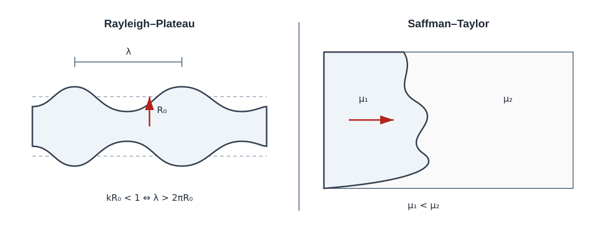
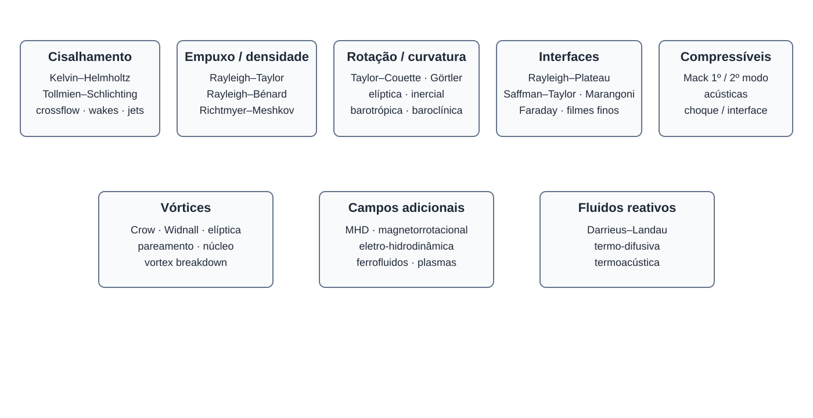

Sumário
- O que unifica todas as instabilidades
- Kelvin–Helmholtz: o cisalhamento enrola a própria vorticidade
- Rayleigh–Taylor e Richtmyer–Meshkov: densidade contra aceleração
- Rayleigh–Bénard e dupla difusão: o calor contra a difusão
- Taylor–Couette e Görtler: a rotação contra a pressão
- Tollmien–Schlichting e lift-up: a camada limite
- Rayleigh–Plateau, Saffman–Taylor e Marangoni: a interface
- Faraday: oscilar o parâmetro alimenta a onda
- Vórtices instáveis: Crow e a instabilidade elíptica
- Geofísica, chamas, som e plasma
- Instabilidade convectiva e absoluta
- Mapa das instabilidades
- A pergunta que unifica todas elas
O que unifica todas as instabilidades
Um escoamento não é instável por parecer desordenado, nem estável por admitir uma solução perfeitamente uniforme. A diferença aparece quando perturbamos o estado com um deslocamento infinitesimal. Se a perturbação decai, o escoamento é estável diante dela. Se o próprio deslocamento reorganiza as forças de modo a empurrar ainda mais o movimento, ele é instável. A imagem é a esfera numa tigela (estável, qualquer desvio gera uma força que a devolve) e no topo de uma colina (instável, qualquer desvio gera uma força que a afasta).

Figura 1. A anatomia causal de uma instabilidade: o ciclo de realimentação positiva em que uma perturbação geométrica induz forças que extraem energia do escoamento médio e amplificam o distúrbio (\(\sigma>0\)).
Na fase linear, a perturbação obedece a \(dA/dt=\sigma A\), com solução \(A=A_0e^{\sigma t}\). A tarefa da física não é calcular o expoente \(\sigma\), mas identificar o mecanismo que dá a ele sinal positivo. Do ponto de vista de energia, nenhuma perturbação cresce de graça:
\[ \frac{dE'}{dt}=P-D, \]
onde \(E'\) é a energia da perturbação, \(P\) é a produção, o trabalho que o escoamento médio realiza sobre ela, e \(D\) é a dissipação viscosa ou difusiva. O crescimento exige \(P>D\): o modo precisa extrair energia de um reservatório do estado-base mais depressa do que o atrito a dissipa. O reservatório pode ser o cisalhamento de uma corrente, a energia potencial de uma camada pesada sobre uma leve, a rotação diferencial, a energia de uma interface ou o calor de uma reação.
Isso organiza todo o ensaio. Toda instabilidade se descreve por três perguntas: (1) qual é o reservatório de energia, (2) que elo físico fecha o ciclo, fazendo o deslocamento aumentar o deslocamento, e (3) qual razão adimensional compara a produção com a dissipação (o parâmetro de controle: Rayleigh, Taylor, Reynolds, Marangoni, Atwood, número de onda). Cada seção abre com uma ficha de três linhas, seguida da física e da matemática.
Uma distinção que evita confusão: a instabilidade é o mecanismo primário de quebra de simetria e de seleção de escala, e produz estruturas regulares como ondas e rolos. A turbulência é o estado tardio, com interações não lineares entre muitas escalas.
Kelvin–Helmholtz: o cisalhamento enrola a própria vorticidade
Tipo: cisalhamento livre, inercial. Reservatório: energia cinética do escoamento médio. Elo do ciclo: a pressão de Bernoulli que a própria ondulação cria. Parâmetro: a diferença de velocidade \(\Delta U\) (e o número de Richardson, se há estratificação estável).
Duas correntes paralelas com velocidades \(U_1>U_2\) deslizam uma sobre a outra, e entre elas há uma camada com forte gradiente de velocidade, ou seja, uma concentração de vorticidade [1], [2]. Imagine uma pequena ondulação \(\eta(x,t)\) na interface. Para estudar o mecanismo, ande com a onda, que se move a \((U_1+U_2)/2\) quando as densidades são iguais, referencial em que o escoamento é permanente e Bernoulli vale. Sobre a crista, o fluido de cima precisa se espremer e acelera, o que reduz a pressão. Sob a crista, o fluido de baixo se alarga e desacelera, o que aumenta a pressão. A diferença de pressão \(p_2'-p_1'>0\) aponta para cima, no mesmo sentido do deslocamento da crista. Nos vales, tudo se inverte e a depressão é empurrada para baixo. A perturbação cria o campo de pressão que a amplifica, e a energia vem do cisalhamento.

Figura 2. Instabilidade de Kelvin–Helmholtz: da camada de cisalhamento plana idealizada (folha de vórtice) à perturbação linear com velocidades normais induzidas e ao enrolamento não linear em vórtices coerentes (“olhos-de-gato”) ligados por filamentos estirados.
Para uma folha de vórtice entre fluidos de mesma densidade, a taxa de crescimento de uma onda de número de onda \(k\) é
\[ \sigma=\tfrac12|k|\,|U_1-U_2|. \]
Cresce com \(\Delta U\), que mede a energia disponível, e com \(k\). A segunda dependência é um aviso: ondas arbitrariamente curtas cresceriam arbitrariamente depressa, o que reflete a idealização de espessura nula. Numa camada real de espessura \(\delta\), a viscosidade ou a difusão suprime as ondas menores que \(\delta\), e a mais amplificada tem \(\lambda\approx7\,\delta\) (numa camada de mistura de 1 cm, cerca de 7 cm).
Com um perfil contínuo \(U(y)\), vale o critério de inflexão de Rayleigh: a instabilidade invíscida exige um ponto de inflexão, \(U''(y_s)=0\). Como \(U''=-d\omega_z/dy\), o ponto de inflexão é um extremo do perfil de vorticidade. A leitura física: sem inflexão, as camadas vizinhas restauram a deformação com a mesma polaridade em toda a seção. Com ela, camadas a alturas diferentes empurram com sinais opostos, e duas ondas de vorticidade contra-propagantes podem travar de fase e crescer juntas. Quando a amplitude chega à espessura da camada, a linearidade acaba e as cristas se enrolam sobre si mesmas, formando os “olhos-de-gato”.
Rayleigh–Taylor e Richtmyer–Meshkov: densidade contra aceleração
Tipo: empuxo (gravitacional) e impulsivo (baroclínico). Reservatório: energia potencial de fluido pesado sobre leve (RT) e energia cinética de um choque (RM). Elo do ciclo: desequilíbrio hidrostático local (RT) e deposição de vorticidade baroclínica (RM). Parâmetro: número de Atwood \(A_t\) e comprimento de onda em relação ao corte capilar.
Mantenha uma interface estática entre dois fluidos de densidades \(\rho_h>\rho_l\) sob gravidade, com o pesado em cima [1]. A pressão hidrostática cresce com a profundidade a taxa \(\rho g\), mais rápido no fluido pesado que no leve. Se uma crista pesada desce uma altura \(\eta\), ela fica cercada por pressão ajustada para sustentar fluido leve, insuficiente para o seu peso. O desequilíbrio líquido por unidade de volume é \((\rho_h-\rho_l)g\), para baixo, e a crista acelera. O leve adjacente sobe pela mesma lógica.

Figura 3. Instabilidades movidas por empuxo: em Rayleigh–Taylor, o fluido denso sobre o leve libera energia potencial em spikes* e bolhas. Em Rayleigh–Bénard, o aquecimento basal supera a difusão e organiza o fluido em rolos convectivos.*
O contraste inercial é o número de Atwood, \(A_t=(\rho_h-\rho_l)/(\rho_h+\rho_l)\), e no regime linear invíscido
\[ \sigma=\sqrt{A_t\,g\,k}, \]
maior para ondas curtas, porque cada crista tem menos massa a mover. A tensão superficial \(\gamma\) age como membrana e estabiliza, com \(k^3\):
\[ \sigma^2=A_tgk-\frac{\gamma k^3}{\rho_h+\rho_l},\qquad k_c=\sqrt{\frac{(\rho_h-\rho_l)g}{\gamma}}. \]
Ondas mais curtas que \(\lambda_c=2\pi/k_c\) oscilam, e as mais longas crescem em dedos de fluido pesado (spikes) entre cúpulas de fluido leve (bubbles). Para água sobre ar, \(\lambda_c=2\pi\sqrt{\gamma/\rho g}\approx2\pi\cdot2{,}7\ \text{mm}\approx1{,}7\) cm, o que explica por que a água não cai de um copo invertido de boca menor que isso se a abertura é coberta por uma tela.
Richtmyer–Meshkov troca a gravidade contínua por um impulso. Quando um choque atravessa uma interface ondulada, o mesmo degrau de pressão age nos dois fluidos, e o leve acelera mais que o pesado. O gradiente de pressão do choque não é paralelo ao de densidade da interface, e o torque baroclínico \(\nabla\rho\times\nabla p/\rho^2\) deposita vorticidade na interface. Passado o choque, a vorticidade permanece e induz velocidade normal. O crescimento inicial é linear no tempo, \(\dot\eta\approx kA_t\Delta U\,\eta_0\), onde \(\Delta U\) é o salto de velocidade induzido pelo choque. RT responde a uma força contínua, RM a um torque impulsivo [3].
Rayleigh–Bénard e dupla difusão: o calor contra a difusão
Tipo: convecção térmica (empuxo contra difusão). Reservatório: energia potencial de fluido quente embaixo. Elo do ciclo: a parcela quente que sobe leva calor antes de perdê-lo. Parâmetro: número de Rayleigh \(Ra\).
Numa camada de espessura \(L\) aquecida por baixo [1], o repouso é possível, com calor conduzido por difusão. A estabilidade é uma corrida entre duas escalas de tempo. O calor vaza por difusão numa parcela quente em \(\tau_{th}\sim L^2/\kappa_T\) (\(\kappa_T\) é a difusividade térmica). Se não vazar, a parcela sobe com velocidade dada pelo equilíbrio entre empuxo e atrito viscoso, \(g\alpha_T\Delta T\sim\nu U/L^2\), ou seja \(U\sim g\alpha_T\Delta T L^2/\nu\), e atravessa a camada em \(\tau_{conv}\sim L/U\). A razão dos dois tempos é o número de Rayleigh:
\[ Ra=\frac{\tau_{th}}{\tau_{conv}}\sim\frac{g\alpha_T\Delta T\,L^3}{\nu\,\kappa_T}. \]
A escala prevê a dependência com \(L^3\) e que o limiar é uma razão de ordem unidade. O valor exato, \(Ra_c\approx1708\) para duas placas rígidas (657 para fronteiras livres), vem do problema de autovalor completo, e o fator vem de geometria. Abaixo disso, o calor vaza antes de a parcela completar o trajeto. Acima, o transporte por movimento vence a condução e surgem rolos convectivos.
Dupla difusão é o caso em que duas propriedades afetam a densidade e difundem a taxas diferentes. Na água do mar, \(\rho'/\rho_0\approx-\alpha_TT'+\beta_SS'\), e o calor difunde cerca de cem vezes mais depressa que o sal, \(\kappa_S/\kappa_T\sim10^{-2}\) (\(1{,}4\times10^{-7}\) contra \(\sim10^{-9}\ \mathrm{m^2/s}\)). Imagine água quente e salgada sobre água fria e doce, com densidade total estável. Uma parcela da camada de cima empurrada para baixo perde calor quase instantaneamente, mas conserva o sal. Fica mais densa que o entorno e afunda, em vez de ser restaurada. Formam-se os dedos de sal, colunas verticais da largura de poucos centímetros que transportam sal e calor por camadas aparentemente estáveis. No regime inverso (convecção difusiva), água fria e doce sobre quente e salgada, o calor da base escapa para cima mais depressa que o sal, e a interface se desestabiliza em escadarias termohalinas [4].
Taylor–Couette e Görtler: a rotação contra a pressão
Tipo: centrífuga, inercial. Reservatório: energia da rotação diferencial. Elo do ciclo: uma parcela deslocada conserva seu momento angular e destoa do entorno. Parâmetro: o critério de Rayleigh, \(d(L^2)/dr\), e o número de Taylor (Görtler, para parede curva).
Entre dois cilindros concêntricos em rotação [1], uma parcela de fluido que é deslocada rapidamente de raio conserva o momento angular específico \(L=rv_\theta=r^2\Omega\). No estado de base, o equilíbrio é \(\tfrac1\rho dp/dr=L^2/r^3\). Se uma parcela vai do raio \(r_1\) ao \(r_2>r_1\), ela traz \(L_1\) e quer a aceleração centrífuga \(L_1^2/r_2^3\), mas o gradiente de pressão naquele raio foi ajustado para \(L(r_2)^2/r_2^3\). A força radial líquida é
\[ f_{rad}=\frac{L_1^2-L^2(r_2)}{r_2^3}. \]
Se \(L^2\) cresce para fora, \(L_1^2<L^2(r_2)\) e \(f_{rad}<0\), a parcela volta. Se \(L^2\) decresce para fora, a parcela é arremessada para fora. O critério de Rayleigh diz que a rotação é estável se, e somente se, \(d(L^2)/dr>0\). Com o cilindro interno girando e o externo parado, \(L^2\) decresce e, acima de um número de Taylor crítico (da ordem de 1708 para folga estreita, a mesma estrutura de Rayleigh–Bénard), o escoamento se organiza em rolos toroidais contrarrotativos, os vórtices de Taylor.

Figura 4. Instabilidades centrífugas: o desequilíbrio entre inércia rotacional e gradiente de pressão radial gera pilhas de rolos toroidais em Taylor–Couette e pares de vórtices alinhados ao escoamento em Görtler.
Görtler é a mesma mecânica numa camada limite sobre parede côncava. A aceleração normal necessária é \(U^2(y)/R\). As parcelas da camada externa, mais rápidas, têm mais inércia centrífuga que as coladas na parede. Se uma perturbação empurra fluido veloz em direção à parede côncava, ele mergulha, e expulsa fluido lento para cima nos flancos. O ciclo fecha em pares de vórtices longitudinais contrarrotativos. Em parede convexa, o gradiente centrífugo se inverte e estabiliza.
Tollmien–Schlichting e lift-up: a camada limite
Tipo: viscosa, modal (TS) e não modal (lift-up). Reservatório: cisalhamento médio da camada limite. Elo do ciclo: a viscosidade quebra a quadratura entre as flutuações. Parâmetro: Reynolds, \(Re_{\delta^*}\approx520\) para Blasius.
A camada limite de uma placa plana (perfil de Blasius) não tem ponto de inflexão no interior. Pelo critério de Rayleigh, seria estável a perturbações bidimensionais invíscidas [1], [2]. Mesmo assim, acima de \(Re_{\delta^*}\approx520\), ondas de Tollmien–Schlichting crescem. O fato de ser um autovalor da equação de Orr–Sommerfeld liga o fenômeno ao problema espectral. A viscosidade, que em geral dissipa, aqui dispara a instabilidade.
O mecanismo é de produção de energia. A taxa com que a onda extrai energia do escoamento médio é
\[ P=-\rho\int_0^\infty\overline{u'v'}\,\frac{dU}{dy}\,dy, \]
e, como \(dU/dy>0\), só há ganho se \(\overline{u'v'}<0\): o fluido empurrado para cima (\(v'>0\)) deve ser lento (\(u'<0\)), e o empurrado para baixo, rápido. Sem viscosidade, \(u'\) e \(v'\) oscilam defasados de noventa graus, e a média do produto é zero: a onda invíscida não extrai um joule do escoamento. A viscosidade é um mecanismo de sincronização de fase. Junto à parede e ao redor da camada crítica (onde \(U(y_c)\) iguala a velocidade de fase da onda), o atrito introduz um atraso de \(u'\) que quebra a quadratura e leva \(\overline{u'v'}\) a valor negativo. Quando essa produção supera a dissipação, \(P>D\), a onda cresce e conduz à transição.
Lift-up é uma rota que dispensa autovalores instáveis. Vórtices longitudinais fracos, no plano transversal à corrente, giram sobre a parede e levantam o fluido lento junto a ela para a corrente livre enquanto empurram o rápido para baixo. Como \(dU/dy\) é grande junto à parede, o transporte vertical gera anomalias de velocidade longitudinal \(u'\sim t\,(dU/dy)\,v'\), e a energia da perturbação cresce com \(t^2\), esculpindo faixas de alta e baixa velocidade (streaks). O ganho máximo de energia escala com \(Re^2\) [2]: para \(Re=10^3\), amplificação de ordem \(10^6\). Mesmo que a teoria modal preveja decaimento a longo prazo, o ganho transitório é suficiente para disparar instabilidades secundárias não lineares e a transição por bypass. É o mecanismo da não normalidade do operador, em que os autovalores individuais enganam e o pseudoespectro descreve o ganho.
Rayleigh–Plateau, Saffman–Taylor e Marangoni: a interface
Tipo: interfacial. Reservatório: energia livre de superfície (RP), trabalho do fluido menos viscoso (ST), tensão superficial dependente da temperatura (Marangoni). Elo do ciclo: a pressão capilar, a mobilidade, o gradiente de tensão. Parâmetro: \(kR<1\) (RP), contraste de mobilidade (ST), número de Marangoni (Ma).
Interfaces armazenam energia \(E_s=\gamma\mathcal A\) e tendem a minimizar a área.
Rayleigh–Plateau. Um jato cilíndrico de raio \(R\) quebra em gotas porque a esfera tem menos área que o cilindro de mesmo volume. A pressão capilar é \(\Delta p=\gamma(\kappa_1+\kappa_2)\), com a curvatura azimutal \(\kappa_1=1/R\) e a axial \(\kappa_2=0\) no cilindro. Perturbe o raio como \(r(z)=R+\epsilon\cos kz\). Então \(\kappa_1\approx1/R-\epsilon\cos(kz)/R^2\) e \(\kappa_2\approx\epsilon k^2\cos(kz)\) (curvatura longitudinal), e a pressão interna é
\[ \Delta p(z)\approx\frac\gamma R+\gamma\epsilon\left(k^2-\frac1{R^2}\right)\cos(kz). \]
No pescoço (onde \(\cos=-1\)), a pressão é maior que a média quando \(k<1/R\) (ondas longas, \(\lambda>2\pi R\)), e o líquido é expulso do pescoço para as barrigas. O pescoço afina, o aperto azimutal aumenta, e o ciclo se fecha até o rompimento. Para ondas curtas (\(k>1/R\)), a curvatura axial domina e restaura. A onda mais rápida tem \(\lambda\approx9R\) (\(kR\approx0{,}70\)), e a gota resultante tem raio \(\approx1{,}9R\) (conservando o volume de um comprimento de onda): um jato de 1 mm de raio solta gotas de cerca de 1,9 mm.
Saffman–Taylor. Num meio poroso ou célula de Hele–Shaw, a lei de Darcy dá \(\mathbf U=-(b^2/12\mu)\nabla p\). Se um fluido pouco viscoso (\(\mu_1\)) empurra um viscoso (\(\mu_2>\mu_1\)), a pressão atrás da interface é quase uniforme (perda de carga pequena) e a do fluido viscoso à frente cai bastante. Uma saliência que avança encontra menos contrapressão que o resto da interface, ganha vazão e acelera: surgem dedos viscosos. Se o viscoso empurrasse o pouco viscoso, o efeito se inverteria e a saliência seria suprimida. A dispersão tem a estrutura de RT, com o contraste de viscosidade no lugar de Atwood:
\[ \sigma=\frac{\mu_2-\mu_1}{\mu_1+\mu_2}\,U\,k-\frac{\gamma b^2k^3}{12(\mu_1+\mu_2)}. \]
Marangoni. Aqui o reservatório é a tensão superficial que varia com a temperatura. A tensão tangencial viscosa equilibra o gradiente, \(\mu\,\partial u_t/\partial n=d\gamma/ds\), e como \(d\gamma/dT<0\), um ponto quente tem tensão menor e é puxado pelas regiões frias vizinhas. O arraste mobiliza o fluido de baixo por viscosidade e traz mais fluido quente da base, o que alimenta células de convecção termocapilar. O parâmetro de controle é o número de Marangoni,
\[ Ma=-\frac{d\gamma}{dT}\frac{\Delta T\,L}{\mu\,\kappa_T}, \]
análogo ao Rayleigh, com valor crítico próximo de 80 (Pearson, 1958). Como \(Ma/Ra\propto1/L^2\), em camadas com menos de cerca de 1 mm o Marangoni domina o empuxo [5].

Figura 5. Instabilidades da interface: a tensão superficial estrangula o jato em gotas em Rayleigh–Plateau. A invasão de um fluido de baixa viscosidade em meio resistente forma dedos em Saffman–Taylor.
Faraday: oscilar o parâmetro alimenta a onda
Tipo: paramétrica. Reservatório: trabalho do vibrador. Elo do ciclo: a gravidade efetiva pulsa e bombeia a onda em fase. Parâmetro: amplitude de forçamento relativa ao amortecimento, \(h>4\zeta\).
Até aqui o estado-base era constante no tempo. Nas ondas de Faraday, um recipiente com líquido vibra verticalmente, \(a(t)=a_0\cos\Omega t\), e a gravidade efetiva oscila, \(g_{ef}(t)=g-a_0\cos\Omega t\) [6]. A amplitude de uma onda estacionária obedece a um oscilador paramétrico:
\[ \ddot x+2\zeta\omega_0\dot x+\omega_0^2\left[1-h\cos\Omega t\right]x=0, \]
com \(\omega_0=\sqrt{gk+\gamma k^3/\rho}\) e \(h=a_0k/\omega_0^2\). A ressonância paramétrica difere da ressonância forçada: a força não empurra a massa, ela modula a rigidez restauradora. O balanço de energia mostra como o bombeamento funciona: a potência fornecida pela modulação é \(\tfrac12\dot k\,x^2\), e só há ganho médio se \(\dot k\) estiver em fase com \(x^2\), que oscila a \(2\omega_0\). A rigidez efetiva precisa aumentar enquanto \(|x|\) cresce e diminuir enquanto \(|x|\) decresce. É o que faz quem empurra um balanço no momento certo.
Daí a resposta sub-harmônica: \(\Omega\approx2\omega_0\), e a onda responde à metade da frequência do vibrador (um recipiente a 30 Hz produz ondas a 15 Hz). Uma análise de primeira ordem dá o limiar \(h>4\zeta\), o mesmo do oscilador de Mathieu. Quando o forçamento supera o amortecimento, há instabilidade.
A mesma ressonância paramétrica rege a instabilidade elíptica de um vórtice comprimido em elipse por um campo de deformação externo: as partículas que orbitam no núcleo sofrem estiramento periódico, que acopla ondas inerciais tridimensionais do núcleo na frequência dupla [7].
Vórtices instáveis: Crow e a instabilidade elíptica
Tipo: interação vortical, não linear. Reservatório: energia cinética do par de vórtices. Elo do ciclo: a indução mútua de Biot–Savart. Parâmetro: o comprimento de onda \(\lambda\approx8\,b_0\) e a inclinação de 48° dos planos de ondulação.
Quando uma instabilidade primária satura, concentra a vorticidade em estruturas coerentes, que se tornam o novo estado-base e podem ser instáveis [8]. A instabilidade de Crow afeta os vórtices de ponta de asa. Dois vórtices contrarrotativos, de circulação \(\pm\Gamma\) e separação \(b_0\), descem com velocidade mútua \(W_0=\Gamma/(2\pi b_0)\). Para \(\Gamma\approx300\ \mathrm{m^2/s}\) e \(b_0\approx27\) m (valores ilustrativos de uma aeronave de transporte), \(W_0\approx1{,}8\) m/s. Perturbe os filamentos com uma onda simétrica de comprimento de onda \(\lambda\sim6\) a \(8\,b_0\), em planos inclinados em cerca de 48° com a horizontal. Onde a ondulação aproxima os dois filamentos, a velocidade mútua \(\Gamma/2\pi b\) cresce e aquela porção desce mais depressa. A curvatura dos filamentos, por Biot–Savart, os faz girar sobre si. O acoplamento trava a onda numa geometria em que cada vórtice continua puxando o vizinho para o centro. A sinuosidade cresce até haver contato e reconexão, transformando os dois vórtices contínuos em anéis ovais, em escala de minutos.
Em escalas menores, a instabilidade de Widnall acopla ondas inerciais do núcleo ao campo de deformação do anel. O colapso de vórtice (vortex breakdown) é a desintegração abrupta de vórtices com forte rotação axial, comum sobre asas delta em alto ângulo de ataque: um gradiente adverso de pressão ao longo do eixo desacelera o núcleo até estagnação e reversão.

Figura 6. Taxonomia física das instabilidades: classificação pelas famílias de reservatório primário (cinética, potencial, momento angular, capilaridade, compressibilidade e campos acoplados).
Geofísica, chamas, som e plasma
Quatro casos mostram que a mesma estrutura vale em contextos muito diferentes.
Instabilidade baroclínica (geofísica). Tipo: rotacional, estratificada. Reservatório: energia potencial disponível em superfícies de pressão e densidade inclinadas. Elo: parcelas que sobem em trajetórias inclinadas com declividade menor que a das superfícies isentrópicas liberam energia do gradiente térmico equador–polo (Eady, Charney), origem dos ciclones e anticiclones de latitudes médias [9].
Darrieus–Landau (chamas). Tipo: hidrodinâmica, de combustão. Reservatório: a expansão do gás na chama, com razão de densidades \(\rho_u/\rho_b\sim5\) a \(8\). Elo: uma saliência da frente de chama em direção ao gás fresco faz as linhas de corrente do gás incidente divergirem à frente dela, e o escoamento desacelera ali. Como a frente avança contra o gás à velocidade \(S_L\), uma corrente mais lenta faz a chama avançar mais em relação ao laboratório, e a saliência cresce. Nas reentrâncias, as linhas convergem, o gás acelera e a chama recua. A frente plana é instável a qualquer comprimento de onda, com taxa \(\sigma\propto S_Lk\).
Termoacústica (combustores). Tipo: acoplamento calor–som. Reservatório: energia química. Elo: o critério de Rayleigh (1878): se a liberação oscilatória de calor ocorre em fase positiva com a pressão acústica,
\[ \int_0^Tp'(t)\,q'(t)\,dt>0, \]
a expansão dos gases realiza trabalho sobre a onda e amplifica a oscilação, até falha estrutural do combustor [10].
Instabilidade magnetorrotacional (discos de acreção). Tipo: MHD. Reservatório: rotação diferencial. Elo: uma linha de campo magnético fraca une duas parcelas em órbitas vizinhas, como uma mola. Num disco kepleriano, \(\Omega\propto r^{-3/2}\) e o momento angular específico \(L\propto r^{1/2}\) cresce com o raio, de modo que o critério hidrodinâmico de Rayleigh diz que o disco é estável. Mas a parcela interna, mais rápida, estica a mola e é freada, perde momento angular e cai para órbita menor, enquanto a externa recebe momento angular e migra para fora. As duas se afastam, esticam a mola ainda mais, e a realimentação converte rotação diferencial em turbulência magnetoidrodinâmica, o que explica o transporte de momento angular que a viscosidade molecular não faz [11]. O critério é \(d\Omega^2/dr<0\), satisfeito por Kepler.
Instabilidade convectiva e absoluta
Um conceito completa a taxonomia. Em uma instabilidade convectiva, a perturbação cresce, mas é carregada para jusante, e em cada ponto do espaço ela acaba passando e a região volta à calma. Em uma instabilidade absoluta, a perturbação cresce no lugar e acaba por tomar todo o domínio. As ondas de Tollmien–Schlichting são convectivas (por isso a transição depende de ruído de entrada), enquanto esteiras e jatos podem ter modos globais, como a esteira de von Kármán [12]. O parâmetro de controle e o tipo de instabilidade são coisas diferentes, e o tipo determina se a resposta é sensível à fonte do ruído ou intrínseca ao escoamento.
Mapa das instabilidades
| Instabilidade | Tipo | Reservatório | Parâmetro e valor crítico |
|---|---|---|---|
| Kelvin–Helmholtz | cisalhamento | cinética média | \(\Delta U\) (instável para todo \(\Delta U\), invíscida). Com estratificação, \(Ri<1/4\) |
| Rayleigh–Taylor | empuxo | potencial gravitacional | \(A_t>0\) e \(\lambda>\lambda_c=2\pi\sqrt{\gamma/\Delta\rho g}\) |
| Richtmyer–Meshkov | impulsiva | cinética de choque | \(\dot\eta\approx kA_t\Delta U\eta_0\) (sempre cresce) |
| Rayleigh–Bénard | convectiva | potencial térmico | \(Ra>1708\) |
| Taylor–Couette | centrífuga | rotação diferencial | \(d(L^2)/dr<0\) e \(Ta>Ta_c\) |
| Görtler | centrífuga | cisalhamento em parede côncava | número de Görtler da ordem de 1 |
| Tollmien–Schlichting | viscosa | cisalhamento médio | \(Re_{\delta^*}>520\) |
| Lift-up | não modal | cisalhamento médio | ganho \(\propto Re^2\) |
| Rayleigh–Plateau | capilar | energia de superfície | \(kR<1\) |
| Saffman–Taylor | mobilidade | trabalho do fluido móvel | \(\mu_2>\mu_1\) |
| Marangoni | termocapilar | tensão superficial | \(Ma>\sim80\) |
| Faraday | paramétrica | vibrador | \(h>4\zeta\) |
| Crow | vortical | cinética do par | \(\lambda\approx8b_0\), 48° |
| Darrieus–Landau | combustão | expansão do gás | \(\rho_u/\rho_b>1\) |
| Termoacústica | acoplamento | calor | \(\int p'q'dt>0\) |
| Magnetorrotacional | MHD | rotação diferencial | \(d\Omega^2/dr<0\) |
A pergunta que unifica todas elas
Diante de dezenas de nomes históricos, é tentador ver a mecânica dos fluidos como uma coleção de exceções. A tabela acima mostra o contrário: cada linha responde às mesmas três perguntas. Todas têm um reservatório de energia no estado-base (cisalhamento, empuxo, rotação, interface, calor, campo). Todas têm um elo em que o deslocamento gera uma força que o aumenta: pressão de Bernoulli, desbalanço hidrostático, excesso de inércia centrífuga, quebra de quadratura viscosa, gradiente capilar, mobilidade, tração magnética. E todas têm um parâmetro de controle que compara a produção com a dissipação: Rayleigh, Taylor, Reynolds, Marangoni, o número de Atwood, o limiar \(h>4\zeta\).
O ciclo fechado é sempre o mesmo, e a diferença entre Kelvin–Helmholtz e a magnetorrotacional é que o reservatório muda de cisalhamento de fluido para rotação magnetizada. Matematicamente, cada uma é um autovalor \(\sigma\) da dinâmica linearizada em torno do estado-base, positivo quando a produção supera a dissipação, de modo que as equações e os números adimensionais são a tradução quantitativa dessa narrativa física. E a lista de exceções que a lógica espectral não alcança também é conhecida: o crescimento transitório de operadores não normais (lift-up) e as instabilidades absolutas, que exigem a pergunta adicional sobre como a perturbação se propaga.
Para quem projeta, a consequência é direta. A pergunta “isto é estável?” se traduz em “qual é o reservatório, qual o elo e qual o parâmetro, e em que lado do limiar estou?”. Transição em camada limite, empuxo em combustor, convecção em eletrônica, quebra de jato em impressoras e ciclones em latitudes médias obedecem a essa mesma gramática.
Referências
[1] Chandrasekhar, S., Hydrodynamic and Hydromagnetic Stability, Dover Publications, New York, 1981. Link
[2] Schmid, P. J., e Henningson, D. S., Stability and Transition in Shear Flows, Applied Mathematical Sciences, Vol. 142, Springer, New York, 2001. Link
[3] Brouillette, M., The Richtmyer–Meshkov Instability, Annual Review of Fluid Mechanics, Vol. 34, 2002, pp. 445–468. Link
[4] Schmitt, R. W., Double Diffusion in Oceanography, Annual Review of Fluid Mechanics, Vol. 26, 1994, pp. 255–285. Link
[5] Schatz, M. F., e Neitzel, G. P., Experiments on Thermocapillary Instabilities, Annual Review of Fluid Mechanics, Vol. 33, 2001, pp. 93–127. Link
[6] Miles, J., e Henderson, D., Parametrically Forced Surface Waves, Annual Review of Fluid Mechanics, Vol. 22, 1990, pp. 143–165. Link
[7] Kerswell, R. R., Elliptical Instability, Annual Review of Fluid Mechanics, Vol. 34, 2002, pp. 83–113. Link
[8] Leweke, T., Le Dizès, S., e Williamson, C. H. K., Dynamics and Instabilities of Vortex Pairs, Annual Review of Fluid Mechanics, Vol. 48, 2016, pp. 507–541. Link
[9] Vallis, G. K., Atmospheric and Oceanic Fluid Dynamics, 2ª ed., Cambridge University Press, Cambridge, 2017. Link
[10] Nicoud, F., e Poinsot, T., Thermoacoustic Instabilities: Should the Rayleigh Criterion Be Extended to Include Entropy Changes?, Combustion and Flame, Vol. 142, 2005, pp. 153–159. Link
[11] Balbus, S. A., e Hawley, J. F., Instability, Turbulence, and Enhanced Transport in Accretion Disks, Reviews of Modern Physics, Vol. 70, 1998, pp. 1–53. Link
[12] Huerre, P., e Monkewitz, P. A., Local and Global Instabilities in Spatially Developing Flows, Annual Review of Fluid Mechanics, Vol. 22, 1990, pp. 473–537. Link